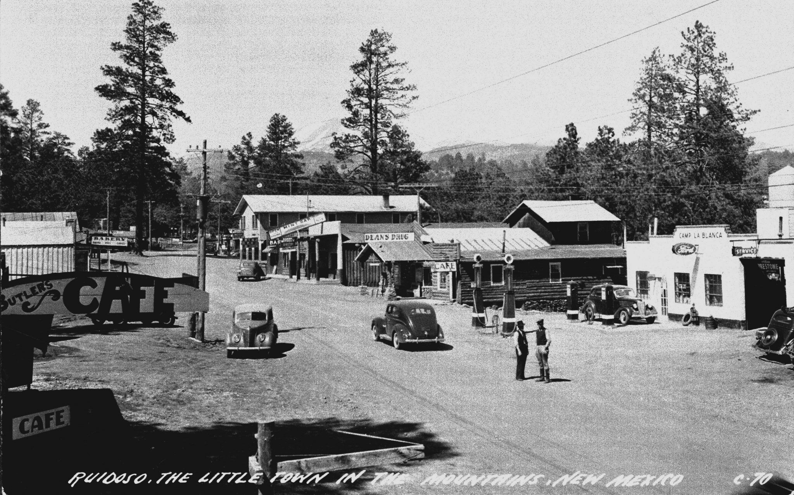

History of Ruidoso

White Mountain, or Sierra Blanca, is a long time landmark for travelers. As southern New Mexico's highest peak, it soars almost 12,000 feet. The headwaters of the Rio Ruidoso, Rio Tularosa, and Rio Bonito all spring from its heights.The Apache consider it sacred. During a turbulent storm at this special place, White Painted Woman gave birth, and all life began.
The warriors hunted antelope and deer. The women prepared meat and skins, and gathered plants, fruits, roots, nuts and seeds. One of their staple foods was from the Mescal plant, so the Spanish called them "Mescalero".
The nomadic Mescalero were skilled warriors that raided settlers and defended territory. Their famous leaders include Geronimo, Mangas Coloradas, Victorio, Lozen and Cochise. The Mescalero Apache Reservation was established in 1873.
The Spanish brought ranching and farming to this area. Captain Saturnino Baca sponsored the bill that created Lincoln County in 1869. At his request, the county was named for the recently assassinated President Abraham Lincoln. At that time, Placita del Rio Bonito became the county seat, and its name was changed to Lincoln, NM.
Juan Patron was also an agent of change to the area. His Catholic education made him a teacher. His place in history allied him with Alexander McSween in the Lincoln County War. In 1878, he was elected Speaker of the NM House of Representatives. Six years later, he died in a gunfight.
The Lincoln County War of 1878 ended in the Five Day Battle. It occurred in the middle of Lincoln and hurled the notorious Billy the Kid to fame. The War centered on the McSween-Tunstall and the Murphy-Dolan competition for government contracts.
More generally some say it was a war between the Freemasons and the Irish Catholics. Ironically, the local Hispanics loved Billy. Sure, he was a quick-tempered cattle rustler, but he spoke their language, and he stood up against Anglo oppression. He fought on McSween's side, largely due to the murder of rancher John Tunstall.
San Patricio, NM (in the Hondo Valley) was originally known as Ruidoso. In 1875, its name was changed in honor of a Catholic priest's patron saint. Early Hispanos used the term "Ruidoso" to describe a noisy creek. Today's Ruidoso grew up around Dowlin's Mill. Will Dowlin survived his brother, after an employee shot Captain Paul dead.
By 1885, with a general store, blacksmith, post office, cabins along the Rio Ruidoso, and proximity to the Chisum Trail . . . Ruidoso, NM was born.
Billy the Kid Scenic Byway
The Billy the Kid Scenic Byway is a great opportunity to explore our history. Its visitor center is in Ruidoso Downs. Visit the Museum of the American Horse and the museums in Lincoln and Fort Stanton. Stop in Capitan to learn about Smokey Bear and the Capitan Mountains named for Saturnino Baca. Visit White Oaks and Carrizozo for a taste of history and artists' community.